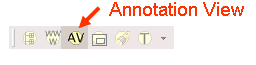

|
|
The Annotation view provides a reference area that can be attached to applications in Eclipse that are not Pliny aware. The view tracks the current active editor and the object (usually, in Eclipse, the document) it is editing and creates a Pliny resource that refers to that editor/object combination. It then displays a reference area into which you can store references to Pliny notes. (see the discussion about the reference area for more details). Each time you return to the same editor/object combination while using Eclipse the Annotation View will note this and bring back the associated reference area that it was displaying last time you were working on this document. Note: if you only use Pliny aware editors (such as those you find in the "standalone" version of Pliny) then you will not need the Annotation View, since all the editors you are using will have already provided a place to attach annotations.
Furthermore, since the view creates a Pliny resource that is linked to each particular editor/object combination then the resource will appear in the Resource Explorer. You can reopen the editor/object from there.
Note that although the Annotation View tracks all editor/object combinations including Pliny editors and objects, it will not show a reference area for Pliny editors since they provide their own reference or annotation area already. As noted above, the Annotation View is really intended to be used when Pliny is not being used in its standalone version, but instead has been installed into a full version of Eclipse, or a simpler environment, and it is useful with non-Pliny aware editors only. The Annotation View will not be very useful if you are using Pliny in its standalone application format (rather than as an Eclipse plugin), since only Pliny-aware editors are available to you there.
To start the Annotation view click on its icon in the main toolbar:

It will launch itself in a view pane. If you are using the Pliny perspective at the time, this view pane will be to the right of the editor window.
Once launched the Annotation View will track the current active editor and object. Each time you change to a new object in the main editor window the Annotation View will open a different reference area for it. Since the Annotation View tracks the current editor/object, it is not possible to have the view display two reference areas at the same time.
You can close the Annotation View at any time by clicking in the "X" in its tab item at the top of the pane that contains it.
Note that the Pliny reference to the editor/object pair is first created when the first object is put in the associated reference area.
The Annotation View provides a reference area, and the commands available in the view correspond to those available in any reference area. See the reference area section of this documentation for more details.
 |
| Pliny Help Pages by John Bradley are licensed under a Creative Commons Attribution-Noncommercial-Share Alike 2.0 UK: England & Wales License. |